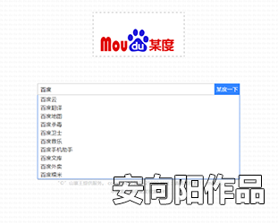
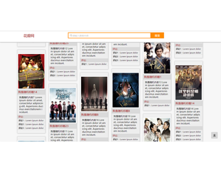

-
汉语是世界上唯一一种面向对象的高级语言【转】
时间：2016年6月23日 作者：锄禾声明：除了汉语之外，我只会一点英语和日语。因此说是“唯一”略显夸张，有吸引眼球的嫌疑，请大家原谅。严谨地说，标题应该是“汉语是一种面向对象的高级语言”。
在网上看到过很多有关汉语和英语比较的文章，他们写的都很不错，并且列举了大量的事例来证明汉语或者英语是优秀的。不过，我想用计算机软件设计的观点，来 理性地分析汉语和英语的优缺点。经过分析，我可以断言：汉语是世界上唯一一种面向对象的高级语言。而以英语为首的其他语言，则属于密码型的索引语言。下面 通过问答的方式来解释这种观点，如有不妥之处，请大家指摘。
一.什么是“对象”？
在计算机世界里，对象（Object）就是人们要进行研究的任何事物。小到螺丝钉，大到飞机，都可以被看成是对象，并且有具体的属性和操作。以“狗”为例：颜色、体重等是它的属性；而吃饭、撒娇、警卫等则是它的操作。 同样，对于语言来说，一个汉字或者一个单词也可以被看成对象。再次以“狗(dog)”为例: 发音和拼写可以被看成是属性，而它的定义 则可以被看成是操作。二.什么是“面向对象”？ 它有哪些主要特点？
面向对象主要是指程序的设计方法。它主要有三大特征：封装、继承、多态。三.什么是封装？
在软件设计中，封装是指将接口与实现显式地分开，并对内部的实现提供保护（即掩藏实现细节）。封装防止了程序相互依赖性而带来的变动影响，是保证软件部件具有优良的模块性的基础，是面向对象设计的前提条件。四.如何考察自然语言的封装性？
封装的两个特点就是：接口和实现分开 以及保护内部的实现。同样的道理，我们可以用下列四个标准来考察自然语言的封装性：
1.外形接口：所有词汇的外形是否是一致的。
2.定义接口：特定词汇的定义是否只有一个。
3.读音接口：特定词汇的读音是否只有一个。
4.拼写方法是固定的，即不会随着场景的变化而变化。五.汉语和英语具有封装性吗？
(1)首先来考察一下汉字。
1.汉字的外形接口：众所周知，所有汉字的外形都是四四方方的方形。
2.汉字的定义接口：大多数汉字的定义只有一个，当然也存在数量不多的多义字。
3.汉字的读音接口：绝大多数汉字的读音只有一个。当然也存在多音字（一般也是多义字），最典型的是“重”字，它有两个读音zhong和chong，前者 是分量大、主要的意思，后者是重复繁冗的意思。但是像这样的多音字数量很少，读音也最多只有两个，常见的多音多义字只有100多个。
4.汉字的拼写方法是否固定的，不会随着场景的变化而变化。虽然汉字有繁简之分，但是不可能在一段文章中同时出现繁简两种字体，因此姑且不论。(2)再来看看英语：
1.英语单词的形状不是固定的，有短有长。短的有象“I”(我)，只有一个字母；而长的有“pneumonoultramicroscopicsilicovolcanoconiosis”(矽肺病)，总共有45个字母。
2.英语中的多义词太多了，比如我们熟悉的“book”，不仅有书和课本的意思，还有预订、登记、立案的意思。再如“man”，除了有人和男人的意思之外，还有操纵、配备人员的意思。
3.英语单词的读音会随着拼写的变化而变化。
4.英语单词的拼写方法不是固定的，会随着场景的变化而是变化。不仅字母有大小写、名词有复数形态，动词还也有让人头疼的时态变化。
复数形态的例子：“book”复数词是“books”，“man”复数词是“men”，拼写和读音都发生了变化。
动词时态的例子： 一般现在时: I do it every day.（我每天做这样的事）
一般过去时: I did it yesterday.（昨天我做了这件事）
一般将来时: I shall/will do it tomorrow.（明天我要做这件事）
现在进行时: I am doing it now.（现在我正在做这件事）
现在完成时: I have done it already.（我已把这件事做好了）
一个do需要do、did、doing、done这4种拼写方法来表达"做"的各种状态，而汉语仅仅加一些常用的副词就可以表达了。结论：汉语是封装性的语言，但是并不完美，因为存在少量的多音字和多义字。而英语则完全没有封装性可言。
六.什么是继承？
在程序设计中，继承是指子类自动享用父类的属性和方法，并可以追加新的属性和方法的一种机制。它是实现代码共享的重要手段，可以使软件更具有开放性、可扩 充性，这是信息组织与分类的行之有效的方法，这也是面向对象的主要优点之一。继承又分为单重继承和多重继承。单重继承是指子类只能继承一个父类的属性和操 作；而多重继承是指子类可以继承了多个父类的属性和操作。熟悉IT的人都知道，Java是一种单重继承语言，而C++是一种多重继承语言。想提醒的是，在计算机语言中，具有相同或相似性质的对象的抽象就是类。也就是说，对象的抽象是类，类的具体化就是对象。类是可以继承的，对象是不能被继承的。但是自然语言中并没有类的概念，为了说明的方便，下面的解说中使用了对象继承的说法，请计算机专家们谅解。
七.如何考察自然语言的继承性？
只有一个标准：是否大规模地存在“字造字”、“词生词”的现象。八.汉语和英语具有继承性吗？
(1)首先说说汉字，汉字的一大特点就是形音字众多，形音字具有“意音双表”的功能。举一个简单的例子：围、圆、园、圈。这4个字的外围都是“口”字，是 用来表意的；而中间的韦、员、元、卷则是用来表音的。用软件设计的观点来看，这就是单重继承，被继承的是“意”，而“音”则是它们各自的特征。
除了单重继承之外，汉语里也存在大量的多重继承，这就是词组。“词组”本来的定义是：由多个汉字所组合而成的语法单位。但是，从程序员的角度来看，“词组”的定义是：从多个对象继承而来的新对象。 下面例子分别标注了词组分解前后的汉英解释。可以一目了然地发现，无论是拼写或是定义，词组都是对汉字的完美继承，而英语则毫无瓜葛。
飞机(plane) = 会飞行(flight)的机器(machine)
工人(worker) = 在工厂(factory)工作的人(man)
解放(liberate) = 解开(unlatch)后释放(release)
计算机(computer) = 能计算(calculate)的机器(machine)(2)英语也有继承，那就是复合词。比如：
football 足球
handwriting 书法
breakwater 防浪堤
或许是因为单词长度限制（即缺乏封装性）的原因，它们数量很少，所占的比例极低。对中国人来说有点难以理解的是，很多应该是复合词的单词，却被不相干的词汇所代替，比如：
猪 pig 公猪 boar 母猪 sow 小猪 piglet 猪肉 pork
牛 cattle 公牛 bull 母牛 cow 小牛 calf 牛肉 beef
羊 sheep 公羊 ram 母羊 ewe 小羊 lamb 羊肉 mutton
汉语的话，只需要7个基本汉字：猪、牛、羊、公、母、小、肉，其它的都是组合而成的。而英语则需要记住15个没有任何关联的词汇。再比如：
一月 January
二月 February
三月 March
四月 April
五月 May
六月 June
七月 July
八月 August
九月 September
十月 October
十一月 November
十二月 December
汉语是用数字加上“月”表达月份，而英语却使用12个完全没有共同特征的单词来表达月份。结论：汉语具有完美的继承特征。英语从总体上来说，还不能被称为具有继承性的语言。
九.什么是多态？
多态是指相同操作接口的方法 在不同的对象中调用可以实现的不同结果。多态和继承是对同一现象的不同描述，继承是强调对象的共同特点，而多态则是强调对象的灵活性。继承是设计层次上的概念，而多态是继承在运行时的表现。十.如何考察自然语言的多态性？
我们已经知道：多态的前提条件是继承；好处是可以在运行时强调对象的灵活性。具体到自然语言，我们可以这样理解：多态性的词汇可以在相互交流的时候，增加理解的灵活性。具体做法就是在交流的时候，仅仅使用一些概念性的词汇，让不同的听众或读者有不同的解读。
所以，衡量自然语言是否具有多态性的指标是：
1.是否大量存在能表达概念性的词汇。
2.这些概念性的词汇是 被具体的词汇所继承。强调继承的原因有两点：一是因为多态性的定义，另外一个原因是它可以增加由虚到实、由概念到具体的联想速度。十一.汉语和英语具有多态性吗？
(1)汉语的多态性无处不在，主要表现在两个方面：一是有很多的被继承的、能表达概念性的词汇，另外一个就是汉语拼音。
首先说说被继承的概念词汇，它们主要在口语中被使用。比如：“我要坐车去上海”。这里的车(car,vehicle)是一个概念性的词汇，具体是哪一种 车，则根据听众的不同而不同，可能是汽车(car)、出租车(taxi)、公共汽车(bus)、火车(train)等等。与英语不同，汉语的“车”字是被 继承的，所以人们会很快地联想到汽车、出租车、公共汽车等词组。而使用英语的人们则需要从记忆中搜索（而不是联想）与车相关的交通工具。 类似“车”的词汇在汉语里有很多，再比如：“去商场买一点肉”。这里的肉(meat)有可能是猪肉(pork)，也有可能是牛肉(beef)，或者是鸡肉 (chicken)等等。
再说说汉语拼音的多态性，汉语拼音有4个音调，在没有标注音调时候，需要根据上下文的理解来决定是哪一个音调。比如zhong guo的音调应该是zhōng guó。 即使是在标注音调场合，也需要根据理解来决定是哪一个汉字。再比如zhōng guó的汉字应该是“中国”，而不是“忠帼”。
由此我们也可以看出来：多态一方面可以降低了交流的准确性、另一方面也提高了说话的灵活性和信息量。(2)英语虽然也有大量类似vehicle、meat的概念词汇，但是却没有被广泛地继承。另外想提醒的是：英语的时态不是的多态性的表现。原因在于：
1.英语时态的主体是动词（即动作），它强调了动作执行状态的不同（没做、正在做、做完了），而不是执行结果的不同。
2.多态是指具有相同特征，但是因为对象不同而导致结果不同。它强调是执行结果的不同。
因此说时态不是多态。以软件设计的观点来看，如果对象的状态发生了变化，就必须更换成另外一个对象，这是一件不可想象的事情，会导致对象无限增多从而失控。结论：汉语具有多态性，而英语并不具备。但是多态对于语言来说，可能没有太多的作用。
十二.面向对象能解决什么问题？
传统的软件开发方法存在下面3个问题：可维护性差、重用性差、不能满足用户不断变化的需要。为了解决这三个问题，面向对象概念被逐步推广和应用。
同样地，与汉语相比英语也存在3个类似的问题：
1.很容易出错。由于英语没有被封装，再加上语法众多，诸如：动词时态、复数形态、虚拟语气等等，导致单词不断的变换，让人无所适从。
2.重用性差。原因不用多说，就是因为它没有继承性，导致单词量庞大。相比而言，汉字的重复利用率非常高。《毛泽东选集》共5卷，但是只用了不到3000不同的汉字。
3.不能满足现代知识爆炸的需求。对待新生事物，英语会使用一个只有专业人士才懂的新单词，而汉语会根据主要的特征来组合汉字，可以让非专业的人们也能理解。比如：
四环素 acheomycin
变阻器 rheostat
肾结石 nephrolith
七边形 heptagon
长方体 cuboid
而面向对象的汉语就不存在上述三大问题。十三.为什么说汉语是高级的？
首先要指出的是，高级并不意味着高效。就像绝大多数程序员喜欢使用Java和C++，而不是机器语言和汇编语言一样。虽然机器语言和汇编语言执行速度很快，但是它们和人类的思维并不接近，不能适应大规模、快速、高质量的软件开发。
正因为汉语具备面向对象的特征，所以说汉语的高级之处在于容错性强、通用性强、扩充性强、语句简短、便于信息的交流、能让人们快速地学习新知识。十四.日语也是面向对象的语言吗？
日语有两种文字组成：假名和汉字。假名是字母语言，它包括平假名和片假名，就像英语的大小写一样，它不具备面向对象的三大特征。而汉字的读音又分为音读和 训读。音读和中文的发音相似，训读则完全不一样。比如“有”的音读是yu，训读是u和aru。日本的前首相麻生太郎就在这上面栽过跟头，他曾经把“未曾 有”读成mizoyu，正确的读音应该是mizou，结果让媒体狠狠地涮了一顿，一度被讥讽为“未曾有首相”。
因为音读汉字的读音以及用法 基本和中文相似，所以可以说它是面向对象的语言（现代汉语中词组，有一大半都是从日本引进的）。而训读汉字往往和假名相结合形成新的词汇，所以没有面向对象特征。
以"生"字作为例子，来介绍日文汉字的复杂性（注：括号中的是生的读音）：
"生"字的音读有两个：
1.生命 同汉语的生命 (sei)mei
2.生涯 同汉语的生涯 (shou)gai
"生"字的训读有四个：
1.生の魚 未加热的鱼 (nama)no sakana
2.生きる 活的意思 (i)kiru
3.生む 出产的意思 (u)mu
4.生える 生长的意思 (ha)eru总结，一部分的日语具备面向对象的特性。
十五.语言除了字和词之外还有语法，语法存在面向对象的特性吗？
个人认为语言基本上可以分为三大系统：文字系统、语法系统和符号系统。
1.字和词属于文字系统，是语言体系的主体部分。
2.语法的传统定义是文字组合和解释的语言规范。在软件设计人员看来，语法是一种对象的组合分解算法，它是一些逻辑的集合，而不是对象的集合，因此语法没有面向对象的说法。
3.符号系统是语言体系的支系统。最长见的符号就是 标点符号和数学符号。符号本身虽然是对象，但是独立性非常强，且数量不多，在此就不讨论它面向对象的特性。
综上所述，由于语法不是对象、符号独立性强，所以考察语言的面向对象特性，主要集中在文字上面。十六.汉语难道就没有缺点了吗？
有！汉语的三大系统都有缺点：
(1)文字系统的缺点：
1.封装性不太完美。上面已经讨论过了，存在少量的多音字和多意词。
2.入门难。英语的入门极其简单：只需要掌握26个字母，剩下的就是记忆了。而且拼写和读音是基本统一的，可以达到会读就会写、会写就会读的程度。而汉语 则要麻烦一些，不仅要掌握2000多个汉字的读音、写法和定义，还要理解常用词组的含义。其实，这个缺点是面向对象的固有缺点，熟悉计算机开发的朋友可能 都知道，虽然C++是高级语言，但是它的概念要比C多，用法也相对复杂，还需要掌握很多的工具类，但是一旦入门之后，就海阔凭鱼跃、天高任鸟飞了。
3.还有一个莫须有的缺点：诱发人们忽视细节。这也是面向对象的隐形缺点，在开发软件系统的时候，面向对象的运用者是设计人员，而不是程序员。设计人员注 重的是业务的分类和总结，而程序员追求的是逻辑准确性和可实现性。汉语也是这样，它的好处是非常自然、容易扩展，坏处是让人们的思维变得懒惰，渐渐地丧失 了精益求精的科学态度。(2)传统意义上的汉语是没有符号系统的。符号是科学演算和理论推导的重要工具，个人认为是字母语言最成功的地方。随着在鸦片战争之后，中国逐步引入西方的标点符号和数学符号，这个重大的缺点得到了根本的解决。
(3)语法系统非常松散。不知道大家有没有发现这个现象：汉语的句子往往很短，而在英语和日语中2、3行的句子却很常见。原因在于汉语既没有英语中 where、who、which那样的单词来划分语句，也没有日语里的助词（はがにでを）来区分主谓宾。这会导致人们不能一目了然地划分语句结构。为了避 免这个弊端，汉语的句子往往很短。但是，即使把句子缩短，也不能完美地解决这个问题。让我举一个例子来说明这种现象：
1.今天真热，我想开空调了。
2.孩子们很天真、很可爱。
上面两个句子都有“天真”这两个字，可究竟哪个是naive的意思呢？这就需要根据上下文的意思来判断了。也就是说，汉语虽然是一种面向对象的语言，但是 由于语法结构的欠缺，导致了人们在看到一句中文之后，需要大脑做一个 先断句后理解的处理过程，而不是直接理解。这一点非常类似Java的反序列化处理（序列化就是指把对象转换为字节序列的过程。而反序列化是指把字节序列恢 复为对象的过程）。
为了避免这个问题，个人建议引入空格。也就是说在书写的时候，有意识地利用空格进行断句，让信息能够快速而准确地传达给读者。比如上面两个句子，可以改写成下面的形式，就不会引发歧义，并且会减少大脑的处理时间。 1.今天 真 热，我 想 开 空调 了。 2.孩子们 很 天真、很 可爱。十七.最后的结论是什么？
古老的汉语是一种面向对象的、但是被序列化的高级语言。 -
Vue.js简介
时间：2016年6月25日 作者：来自官网概述
Vue.js（读音 /vjuː/, 类似于 view）是一个构建数据驱动的 web 界面的库。Vue.js 的目标是通过尽可能简单的 API 实现响应的数据绑定和组合的视图组件。
Vue.js 自身不是一个全能框架——它只聚焦于视图层。因此它非常容易学习，非常容易与其它库或已有项目整合。另一方面，在与相关工具和支持库一起使用时，Vue.js 也能完美地驱动复杂的单页应用。
如果你是有经验的前端开发者，想知道 Vue.js 与其它库/框架的区别，查看 对比其它框架；如果你对使用 Vue.js 开发大型应用更感兴趣，查看构建大型应用。
响应的数据绑定
Vue.js 的核心是一个响应的数据绑定系统，它让数据与 DOM 保持同步非常简单。在使用 jQuery 手工操作 DOM 时，我们的代码常常是命令式的、重复的与易错的。Vue.js 拥抱数据驱动的视图概念。通俗地讲，它意味着我们在普通 HTML 模板中使用特殊的语法将 DOM “绑定”到底层数据。一旦创建了绑定，DOM 将与数据保持同步。每当修改了数据，DOM 便相应地更新。这样我们应用中的逻辑就几乎都是直接修改数据了，不必与 DOM 更新搅在一起。这让我们的代码更容易撰写、理解与维护。
-
node.js 初体验【转】
时间：2016年6月27日 作者：by 聂微东最近写的文章收到许多朋友的反馈，感谢大家的支持和建议，让我对坚持写博客充满热情，一个月一篇文章确实有点少，所以以后尽力多做分享，做好的分享，希望能对朋友们有用。
到新公司的这段时间学到了很多新东西，有好多东西需要去总结去探索，不过事情得一件一件来，今天咱们先从Node开始。注：以后出现的Node即node.js。
先搞点前戏热热场 - 为什么写这篇文章：
1.前段时间单位有新项目启动，服务端要做的工作不多也不算麻烦，就是处理一些中间层的服务，而且我们团队里面个个都会JavaScript，领导就决定试试服务器端的JavaScript，结果本人有幸被派去研究了几天Node，怀着鸡冻的心情开始了node.js的篇章，这篇文章也就是为这几天研究的总结。
2.一个JavaScript工程师如果没听过node.js那么我想你是不是错过了什么，每个优秀的前端工程师都有必要去了解后台处理流程，那么如果又能从JavaScript出发，岂不是一件很美妙的事么。
3.互联网的火热使得JavaScript风光无限，且服务端的JavaScript也并不是什么新技术了，相关的框架也有不少，只是node.js的成功让他爆发式的出现在我们的视线中，让很多前端工程师看到了从前端写到后端的另一种实现希望。注：node.js 是一个允许开发人员使用 JavaScript 语言编写服务器端代码的框架。
4.今年8月曾在某大公司最后一轮(第五轮)的面试被问到Node.js的问题，相对应的回答那是相当之糟糕，结果怎样你们懂的，感觉这个问题是导致没有通过的关键点之一...那家公司是我在读大学的时候就无比向往的公司，现在回想起那次经历和过程，谈不上惋惜，毕竟我真的尽力了 - 其实这篇文章更多的也是为了完成自己一个小小的心结...好吧，又扯远了。
5.欢迎各种转载，不过请注明出处，谢谢。
Node是个啥？
写个东西还是尽量面面俱到吧，所以有关基本概念的东西我也从网上选择性的拿了些下来，有些地方针对自己的理解有所改动，对这些概念性的东西有过了解的可选择跳过这段。
1.Node 是一个服务器端 JavaScript 解释器，可是真的以为JavaScript不错的同学学习Node就能轻松拿下，那么你就错了，总结：水深不深我还不知道，不过确实不浅。
2.Node 的目标是帮助程序员构建高度可伸缩的应用程序，编写能够处理数万条同时连接到一个物理机的连接代码。处理高并发和异步I/O是Node受到开发人员的关注的原因之一。
3.Node 本身运行Google V8 JavaScript引擎，所以速度和性能非常好，看chrome就知道，而且Node对其封装的同时还改进了其处理二进制数据的能力。因此，Node不仅仅简单的使用了V8，还对其进行了优化，使其在各种环境下更加给力。（什么是V8 JavaScript 引擎？请“百度知道”）
4.第三方的扩展和模块在Node的使用中起到重要的作用。下面也会介绍下载npm，npm就是模块的管理工具，用它安装各种 Node 的软件包(如express，redis等)并发布自己为Node写的软件包 。
安装Node
在这简单说说在window7和linux两种环境下安装Node。安装的时候一定要注意Python的版本，多次因为Python版本的问题安装失败，建议2.6+的版本，低版本会出现Node安装错误，查询Python版本可在终端中输入：pyhton -v
1.先介绍linux下的安装吧，Node在Linux环境下的安装和使用都非常方便，建议在Linux下运行Node，^_^...我使用的是Ubuntu11.04
a.安装依赖包：50-100kb/s大概每个包一分钟就能下载安装完成
sudo apt-get install g++ curl libssl-dev apache2-utils
sudo apt-get install git-coreb.在终端一步步运行一下命令：
git clone git://github.com/joyent/node.git
cd node
./configure
make
sudo make install安装顺利的话到这一步Node就算安装成功了，2M的网络用了共计12分钟。
注：如果不用git下载也可以直接下载源码，不过这样下载安装需要注意Node版本问题。使用git下载安装是最方便的，所以推荐之。
2.在Windows下使用Cygwin安装Node，这个方式不太推荐，因为真的需要较长时间和较好的人品。我的系统是 win7旗舰版
Cygwin是一个在windows平台上运行的unix模拟环境，下载地址：http://cygwin.com/setup.exe。
下载好Cygwin后开始安装，步骤：
a.选择下载的来源 - Install from Internet
b.选择下载安装的根目录
c.选择下载文件所存放的目录
d.选择连接的方式
e.选择下载的网站 - http://mirrors.163.com/cygwin
f.麻烦就麻烦在这步，考验人品的时候到了。需要的下载安装时间不确定，反正需要比较长的时间(超过20分钟)，偶尔会出现安装失败的情况。单击一下各个程序包前面的旋转箭头图标选择你想要的版本，选中时会出现了"x"号表示已经选中了该程序包。选择需要下载的程序包：
Devel包：
gcc-g++: C++ compiler
gcc-mingw-g++: Mingw32 support headers and librariesfor GCC C++
gcc4-g++: G++ subpackage
git: Fast Version Control System – core files
make: The GNU version of the ‘make’ utility
openssl-devel: The OpenSSL development environment
pkg-config: A utility used to retrieve information about installed libraries
zlib-devel: The zlib compression/decompression library (development)
Editor包：vim: Vi IMproved – enhanced vi editor
Python包：把Default切换成install状态即可
Web包：
wget: Utility to retrieve filesfrom the WWW via HTTP and FTP
curl: Multi-protocol file transfer command-line tool上个截图，以下载zlib-devel为例：

其上几步走完才算把环境搭建完成，可是现在还没有到安装Node，还需要在Cywgin的ASH模式下执行rebaseall，步骤如下：
a. cmd命令行
b. 进入cygwin安装目录下的bin子目录
c. 运行ash进入shell模式
d. ./rebaseall -v
e. 没有错误就关闭命令行窗口
好了，现在到下载安装Node了，启动Cygwin.exe后输入：$ wget http://nodejs.org/dist/node-v0.4.12.tar.gz
$ tar xf node-v0.4.12.tar.gz
$ cd node-v0.4.12
$ ./configure
$ make
$ make install3.直接下载node.exe文件
nodejs.org下载较慢所以我在网盘上传了一个，下载地址：http://www.everbox.com/f/VhyL6EiGF5Lm3ZSRx85caFDIA5
听说有不太稳定的问题，不过你假如只是想先在windows下了解Node，个人感觉这个方法比你装个Cygwin好很多。
注：原本不太想写安装Node这段，可是为了这篇文章的全面性还是写了，没想到一写就是那么长一段了...茶几了
“Hello World” - 为什么每次见到这句心情都会小激动，不解...
首先，创建个hello.js的文件，在文件中copy如下代码：
var http = require('http');
http.createServer(function (req, res) {
res.writeHead(200, {'Content-Type': 'text/plain'});
res.end('Hello World\n');
}).listen(1337, "127.0.0.1");
console.log('Server running at http://127.0.0.1:1337/');代码逻辑：
a. 全局方法require()是用来导入模块的，一般直接把 require() 方法的返回值赋值给一个变量，在 JavaScript 代码中直接使用此变量即可 。require("http") 就是加载系统预置的 http 模块
b. http.createServer 是模块的方法，目的就是创建并返回一个新的web server对象，并且给服务绑定一个回调，用以处理请求。
c. 通过 http.listen() 方法就可以让该 HTTP 服务器在特定端口监听。
d. console.log就不用多说了，了解firebug的都应该知道，Node实现了这个方法。
注： 想了解具体细节请查看文档 cnodejs.org/cman/all.html#http.createServer
接着运行Node服务器，执行hello.js代码，成功启动会看见console.log()中的文本。有图有真相：


npm的下载和使用
除Node本身提供的API外，现在有不少第三方模块可极大的提高开发效率，npm就是Node的软件包管理器，可以用它安装所需软件包并发布自己为nodejs写的软件包。官网地址：npmjs.org
安装只需要在终端写入一行代码：
curl http://npmjs.org/install.sh | sh
npm安装node扩展包同样是一行代码：
npm install <包名> //例：npm install express
注：如果安装模块的过程中报域名错误的话，请清空缓存 >npm cache clean 或重启计算机即可。
理解Node的模块概念
在Node中，不同的功能组件被划分成不同的模块。应用可以根据自己的需要来选择使用合适的模块。每个模块都会暴露一些公共的方法或属性。模块的使用者直接使用这些方法或属性即可，对于内部的实现细节就可以不用了解。除了Node本身提供的API外，开发人员也可以利用这个机制来将应用拆分成多个模块，以提高代码的可复用性。
1.如何使用模块？
在Node中使用模块是非常方便的，在 JavaScript 代码中可以直接使用全局函数 require() 来加载一个模块。
在刚刚”Hello World"的例子中，require("http") 可以加载系统预置的 http 模块；模块名称以 "./" 开始的，如 require("./myModule.js") 用来加载与当前 JavaScript 文件同一目录下的 myModule.js 模块。
2.自己如何开发模块？
刚刚介绍使用require()导入模块的时候，模块名称以 "./" 开始的这种，就是自己开发的模块文件。需要注意的就是JS文件的系统路径。
代码中封装了模块的内部处理逻辑，一个模块一般都会暴露一些公开的方法或属性给其他的人使用。模块的内部代码需要把这些方法或属性给暴露出来。
3.来一套简单的例子。先创建一个模块文件如myModule.js，就一行代码
console.log('Hi Darren.')然后创建一个test.js文件，导入这个JS文件，执行node看到结果

现在Node社区中已有不少第三方的模块，希望能有更多人通过学习Node，加入到这个大家庭中，为Node社区来添砖加瓦。先谢谢之，咱们继续。
4.来一个深点的例子。这个例子中将会针对 私有和共有 进行介绍。先创建一个myModule.js，代码如下：
var name = "Darren";
this.location = "Beijing";
this.showLog =function(){
console.log('Hi Darren.')
};代码中出现了三种类型，分别是： 私用属性，共有属性和共有方法，再创建一个test.js，执行Node

结果高亮的地方很清楚的告诉我们，私有方法我们在模块以外是取不到的，所以是undefined。共有属性和共有方法的声明需要在前面加上 this 关键字。
Node能做什么和它的优势
Node核心思想： 1.非阻塞； 2.单线程； 3.事件驱动。
在目前的web应用中，客户端和服务器端之间有些交互可以认为是基于事件的，那么AJAX就是页面及时响应的关键。每次发送一个请求时（不管请求的数据多么小），都会在网络里走一个来回。服务器必须针对这个请求作出响应，通常是开辟一个新的进程。那么越多用户访问这个页面，所发起的请求个数就会越来越多，就会出现内存溢出、逻辑交错带来的冲突、网络瘫痪、系统崩溃这些问题。
Node的目标是提供一种构建可伸缩的网络应用的方案，在hello world例子中，服务器可以同时处理很多客户端连接。
Node和操作系统有一种约定，如果创建了新的链接，操作系统就将通知Node，然后进入休眠。如果有人创建了新的链接，那么它（Node）执行一个回调，每一个链接只占用了非常小的（内存）堆栈开销。
举一个简单的异步调用的例子，把test.js和myMydule.js准备好了，^_^。把以下代码拷贝到test.js中并执行：
var fs = require('fs');
fs.readFile('./myModule.js', function (err, data) {
if (err)throw err;
console.log('successfully');
});
console.log('async');
所谓的异步，大家应该都能想得到运行时会先打先显示"async"，再显示"successfully"。
Node是无阻塞的，新请求到达服务器时，不需要为这个请求单独作什么事情。Node仅仅是在那里等待请求的发生，有请求就处理请求。
Node更擅长处理体积小的请求以及基于事件的I/O。
Node不仅仅是做一个Web服务的框架，它可以做更多，比如它可以做Socket服务，可以做比方说基于文件的，然后基于像一些比方说可以有子进程，然后内部的，它是一个很完整的事件机制，包括一些异步非注射的解决方案，而不仅仅局限在网络一层。同时它可能，即使作为一个Web服务来说，它也提供了更多可以深入这个服务内核、核心的一些功能，比方说Node使用的Http Agent，这块就是它可以更深入这个服务内核来去做一些功能。
Node事件流概念
因为Node 采用的是事件驱动的模式，其中的很多模块都会产生各种不同的事件，可由模块来添加事件处理方法，所有能够产生事件的对象都是事件模块中的 EventEmitter 类的实例。代码是全世界通用的语言，所以我们还是用代码说话：
var events = require("events");
var emitter =new events.EventEmitter();
emitter.on("myEvent", function(msg) {
console.log(msg);
});
emitter.emit("myEvent","Hello World.");简单的分析这段：
1. 使用require()方法添加了events模块并把返回值赋给了一个变量
2. new events.EventEmitter()这句创建了一个事件触发器，也就是所谓的事件模块中的 EventEmitter 类的实例
3. on(event, listener)用来为某个事件 event 添加事件处理方法监听器
4. emit(event, [arg1], [arg2], [...]) 方法用来产生事件。以提供的参数作为监听器函数的参数，顺序执行监听器列表中的每个监听器函数。
EventEmitter 类中的方法都与事件的产生和处理相关：
1. addListener(event, listener) 和 on(event, listener) 这两个方法都是将一个监听器添加到指定事件的监听器数组的末尾
2. once(event, listener) 这个方法为事件为添加一次性的监听器。该监听器在事件第一次触发时执行，过后将被移除
3. removeListener(event, listener) 该方法用来将监听器从指定事件的监听器数组中移除出去
4. emit(event, [arg1], [arg2], [...]) 刚刚提到过了。
在Node中，存在各式各样不同的数据流，Stream（流）是一个由不同对象实现的抽象接口。例如请求HTTP服务器的request是一个流，类似于stdout（标准输出）；包括文件系统、HTTP 请求和响应、以及 TCP/UDP 连接等。流可以是可读的，可写的，或者既可读又可写。所有流都是EventEmitter的实例，因此可以产生各种不同的事件。
可读流主要会产生以下事件：
- data 当读取到流中的数据时，此事件被触发
- end 当流中没有数据可读时，此事件被触发
- error 当读取数据出现错误时，此事件被触发
- close 当流被关闭时，，此事件被触发，可是并不是所有流都会触发这个事件。（例如，一个连接进入的HTTP request流就不会触发'close'事件。）
还有一种比较特殊的 fd 事件，当在流中接收到一个文件描述符时触发此事件。只有UNIX流支持这个功能，其他类型的流均不会触发此事件。
相关详细文档：http://cnodejs.org/cman/all.html#events_
强大的File System 文件系统模块
Node 中的 fs 模块用来对本地文件系统进行操作。文件的I/O是由标准POSIX函数封装而成。需要使用require('fs')访问这个模块。所有的方法都提供了异步和同步两种方式。
fs 模块中提供的方法可以用来执行基本的文件操作，包括读、写、重命名、创建和删除目录以及获取文件元数据等。每个操作文件的方法都有同步和异步两个版本。
异步操作的版本都会使用一个回调方法作为最后一个参数。当操作完成的时候，该回调方法会被调用。而回调方法的第一个参数总是保留为操作时可能出现的异常。如果操作正确成功，则第一个参数的值是 null 或 undefined 。
同步操作的版本的方法名称则是在对应的异步方法之后加上一个 Sync 作为后缀。比如异步的 rename() 方法的同步版本是 renameSync() 。下面列出来了 fs 模块中的一些常用方法，都只介绍异步操作的版本。
test.js和myModule.js文件准备好了木？把下面这段代码copy到test.js中执行一次
var fs = require('fs');
fs.unlink('./myModule.js', function (err) {
if (err)throw err;
console.log('successfully deleted myModule.js');
});如果没有报error，那么myModule.js就被删除了，就是这么简单

这只是一个简单的例子，感兴趣的话自己去多多尝试，实践出真理。由于篇幅原因就不多举例了。^_^
学习Node的总结：
1.对于一个linux的命令和shell知识几乎为零的我来说，这段时间又学到了不少关于linux知识；vim真是一个强大的编辑器，不用鼠标的感觉真的很好；而且有一点对我来说很重要，在linux下编程很cool，尤其是在团队中都是使用windows的，装装更健康^_^。
2.理解了服务端JavaScript的一个成功框架-Node，以及它的一些优势和使用的方式，这篇文章就是最好的总结，当然，这只会是一个开始。
3.对于没有进入那么梦想的公司其实是有那么点遗憾，不过生活就应该要这样，有波折有起伏，这正是我需要并且期待的...那么新的生活还是要继续，做自己的舵手，把握好自己的方向，过去的就让它过去吧。
一些想对大伙说的话：
1. 在这我得打击一部分人的积极性。假如你对后台技术不够了解或者没接触过服务端语言，不知道I/O这些知识，没有后台处理流程这种概念，那么......Node并不是一门适合入门的服务端技术。为什么这么说：
a.重点就是中文实例少，文章少，想系统的学习会比较麻烦，所以在使用过程中总有一种不成熟的感觉，当然主要还是因为我对它不熟悉所造成的。国内使用Node的公司确实不多，当然国外还是有不少了，从cnodejs.org截了一个图：

b.对没有经验的朋友来说node其实并不好上手，从最简单“Hello world”就可以看出来(各种运行环境和安装细节的了解都得费点功夫)，不要以jQuery库为比较，所处理的事物不同，学习的成本也不同 - 所以不太建议作为新手入门的服务端技术，如果想学习一门服务端语言PHP和Python都是不错的选择，因为：书多 例子多 框架多 上手简单 容易理解 搭建方便...
c.以上都是我个人善意的建议，由于水平有限，请大家多多指教，希望嘴下留情。
2. 关于Node的书写规范和具体技巧本人就不献丑了，自己写Node的代码也不多，不过面向对象的编程思想在哪都是好使的。
3. 希望这篇文章能对大家学习Node有用，如果觉得这文章也算用心，请劳驾点右下角的推荐。
推荐几个学习Node的网址：
http://nodejs.org/http://cnodejs.org/ 由淘宝人建立的社区，内有Node中文文档
http://www.oschina.net/p/nodejs/
http://www.ibm.com/developerworks/cn/opensource/os-nodejs/index.html
注：最终领导决定放弃Node而使用Python，可是这不会影响我对Node的喜爱。我说过，这篇文章只会是一个开始。
-
手风琴效果
运用运动框架技术，判断的是当前鼠标指向的index，大于的向右侧运动，小于的左侧运动。
-
仿苹果菜单
判断鼠标距离图片的最小距离，距离哪个最近，哪个就会越大。里面图标可以点击哦！
-

百度搜索
运用jsonp(json with padding)技术，实现跨域请求，并运用百度搜索接口获取数据，实现搜索效果。
-
许愿墙
运用ajax技术，实现无刷新发送与请求数据的效果。
-
WebQQ
WebQQ是运用jsonp技术，跨域发送数据与接收数据，其中包括登录/注册信息，发送/接收消息等。
-

仿花瓣瀑布流
无限加载瀑布流，实现了伪动态加载，程序只需简单改造配合ajax技术就可以实现数据动态化加载。
- 安向阳
- axy7779@outlook.com
- 1500-130-3312
- 603428244
- axy7779
-
关于我
一直对编程有一种敬仰之心，并认为程序开发可以改变世界，并一直保持一种学习的态度，并为为之保持兴趣。
-
我的邮箱
点击上方链接，可发送邮件。 -
我的电话
1500-130-3312
可拨打上方电话，与我联系。 -
QQ二维码
扫描上方二维码，可加我为QQ好友。 -
微信二维码
扫描上方二维码，可加我为微信好友。